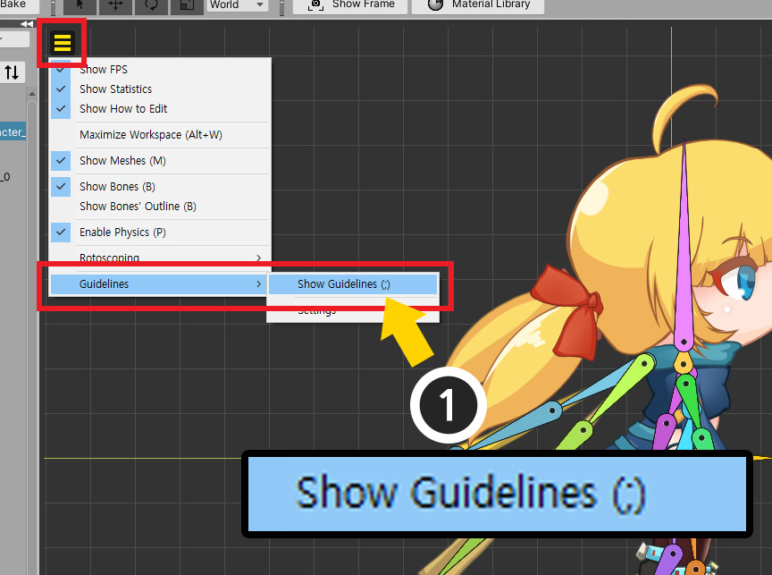

AnyPortrait > Manual > Guidelines
Guidelines
1.3.2
When creating character animations, sometimes you need a "reference position".
For example, it would be convenient if a straight line corresponding to "ground" was displayed to keep the height of the character's feet constant.
This page introduces a function called Guideline developed for this convenience.

(1) Open the View Menu.
(2) There is the Guidelines menu, and the Show Guidelines and Settings menus are sub-menus.
Click Guidelines > Settings.

A window will appear where you can add guidelines.
You can add, modify, or remove guidelines.
(1) Click the Add New Guideline button to add a new guideline.

(2) The new guideline is added.

Each item on the guideline setting dialog is as follows.
1. Show/Hide : You can hide guidelines separately.
2. Direction and position : Determining the vertical or horizontal line and set the position value based on the origin.
3. Color : The color of the guideline.
4. Thickness : You can select between Thick and Thin lines.
5. Remove : Remove the guideline.
6. Remove All Guidelines : Remove all guidelines.

One guideline has been added but not yet visible in the workspace.
(1) Open the View menu and click Guidelines > Show Guidelines to activate it. (Shortcut key: ; )

You can see the green guideline appear in the workspace.

Additional guidelines can be added as above.